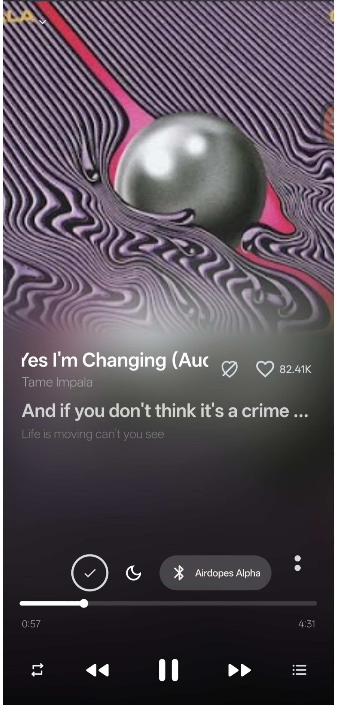
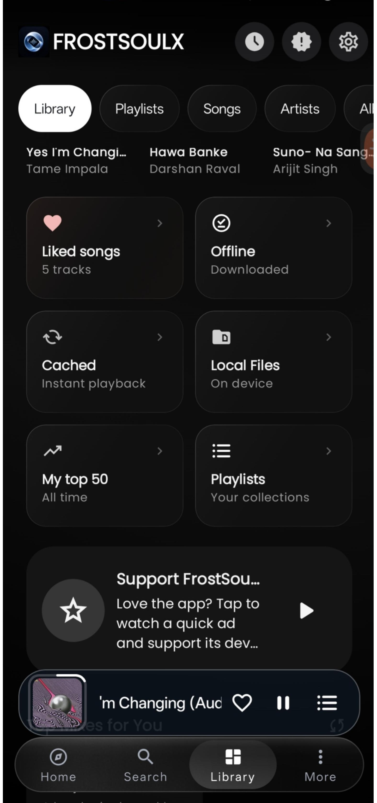

◉
Artwork takes the lead
Album art shapes the atmosphere with extracted color and immersive player presentations.
A listening space built around the art, feeling, and details of every track. Explore your library, follow synchronized lyrics, discover what fits the moment, and settle into an immersive player made for the music.
Open source · Android · GPL-3.0
FrostSoulX brings everyday playback and deeper listening into one considered experience, with the music itself always in the foreground.
Album art shapes the atmosphere with extracted color and immersive player presentations.
Play local files, organize albums and artists, manage playlists, and keep listening in the background.
Follow time-synchronized lyrics, adjust timing, explore translations, and stay close to the words.
Explore music, artists, albums, playlists, listening history, and contextual recommendations.
A vinyl-inspired signature, artwork-focused screens, and a compact mini-player keep listening close.
An experimental immersive-audio path explores spatial processing and room-inspired listening.
A personal listening environment: artwork first, controls where you need them, and space for lyrics and discovery without losing the thread of the song.


FrostSoulX includes an experimental immersive-audio path with room-inspired processing. It is still evolving, and results can vary by device. Turn it off for the standard playback path whenever you prefer.
Explore the code, see what’s changed, and find the latest available build on GitHub. FrostSoulX is an independent open-source project, built in the open.